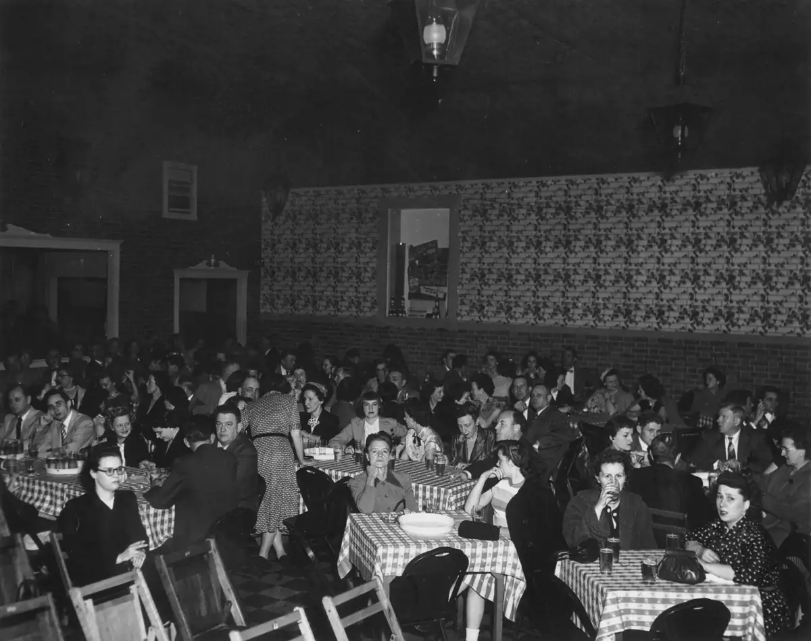

Home / Renshaws / 005 Renshaw Gerald and Georgenna / ren005-00014
ren005-00014
← Return to 005 Renshaw Gerald and Georgenna
← ren005-00013 ren005-00015 →
Georgennea Renshaw is sitting at the front, center table. Probably Geraldine Renshaw sitting beside her. This is the same place where Geraldine's Square Deal graduation party was held ("Ch. Huerich Brewing Co."), probably near the same time.

Actual size: 9.53" × 7.54" · Scanned at: 300 dpi · 6.47 MP (2860×2263) · Image date: 3 Apr 2006 · Comment date: 3 Apr 2006
Copyright © 2005–2026 Thomas Krehbiel. Images are freely distributable for personal use. For more information about these images contact Thomas Krehbiel (tkrehbiel@gmail.com).
Photos were scanned at either 300dpi or 600dpi, depending on the quality of the photograph. Slides were scanned at 1800dpi. Documents were scanned at 100dpi or 150dpi. Photoshop enhancements: most images have had their contrast improved. Some color photos were corrected to restore color balance. Some blurry images were mildly sharpened. Occasionally dust, scratches, and blemishes were removed digitally.
{kind=link}